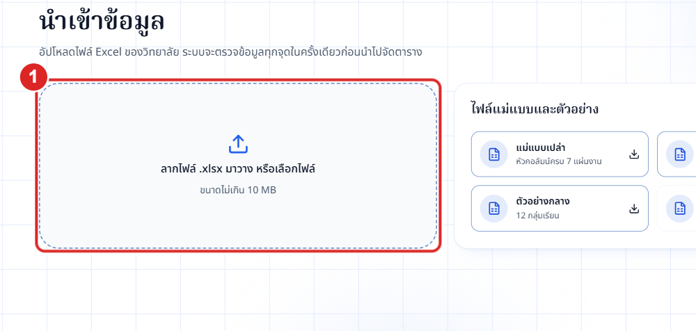
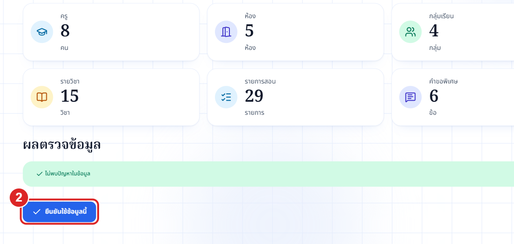
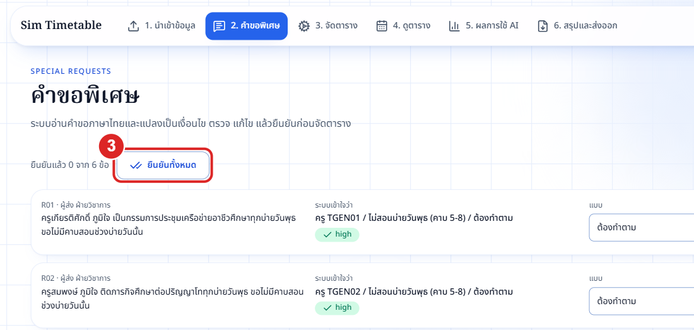
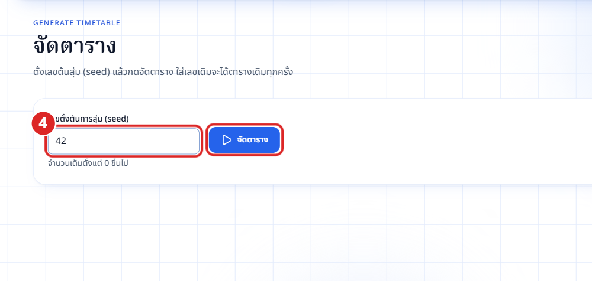
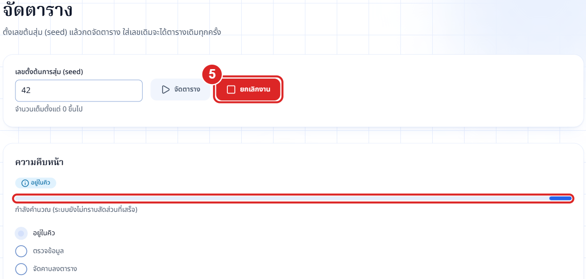
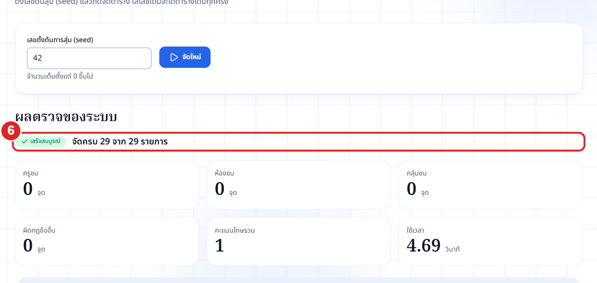
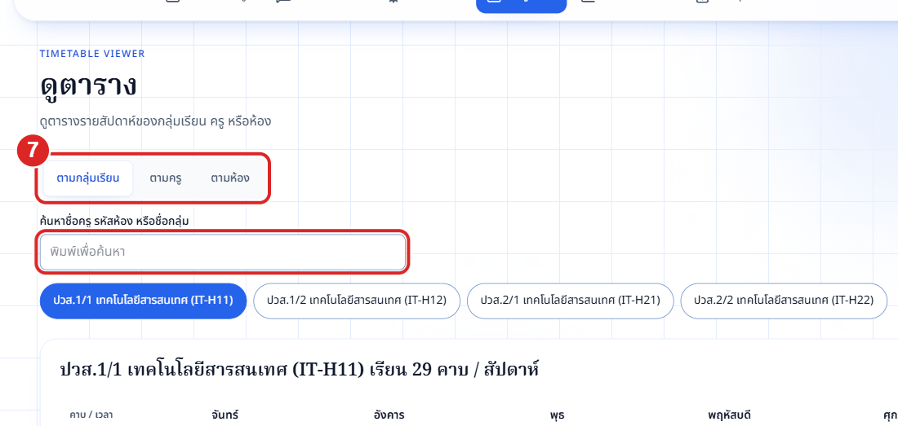
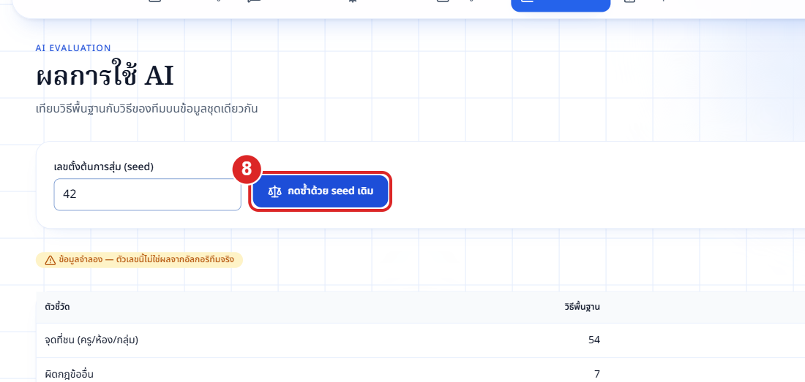
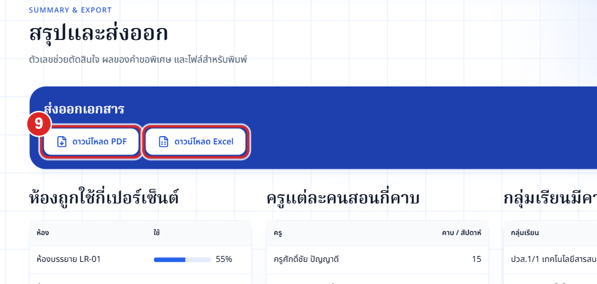

1
อัปโหลดไฟล์ Excel — กดช่อง "ลากไฟล์ .xlsx มาวาง หรือเลือกไฟล์" แล้วเลือกไฟล์ข้อมูลของวิทยาลัย ไม่มีไฟล์? โหลดแม่แบบ/ตัวอย่างจากกล่องทางขวา ระบบตรวจไฟล์ให้ทันที
ไม่ต้องเข้าสู่ระบบ — เปิดลิงก์เว็บแล้วทำตามหมายเลข 1 → 9 ตามลำดับ

อัปโหลดไฟล์ Excel — กดช่อง "ลากไฟล์ .xlsx มาวาง หรือเลือกไฟล์" แล้วเลือกไฟล์ข้อมูลของวิทยาลัย ไม่มีไฟล์? โหลดแม่แบบ/ตัวอย่างจากกล่องทางขวา ระบบตรวจไฟล์ให้ทันที

ตรวจสรุป แล้วยืนยัน — ดูจำนวนครู ห้อง กลุ่ม รายการสอน ถ้าไม่มีข้อผิดพลาด กด "ยืนยันใช้ข้อมูลนี้" (ถ้ามีข้อผิดพลาด ดูคอลัมน์ "วิธีแก้" แก้ไฟล์แล้วอัปโหลดใหม่)

ตรวจคำขอพิเศษ — แต่ละข้อแสดงคำขอคู่กับสิ่งที่ระบบเข้าใจ เปลี่ยนแบบ (ต้องทำตาม / ทำถ้าทำได้ / ไม่ต้องทำเพิ่ม) ได้ แล้วกด "ยืนยันทั้งหมด" และกด "ไปหน้าจัดตาราง"

ตั้งเลขสุ่มแล้วจัดตาราง — ใส่เลขตั้งต้น (seed) ใส่เลขเดิมจะได้ตารางเดิมทุกครั้ง แล้วกด "จัดตาราง"

รอและติดตามความคืบหน้า — ดูขั้นตอนที่กำลังทำงาน ถ้าต้องการหยุดกด "ยกเลิกงาน" แล้วยืนยัน จากนั้นกด "จัดใหม่" ได้

อ่านผลตรวจ — จัดครบกี่รายการ ครู/ห้อง/กลุ่มชนกี่จุด (ควรเป็น 0) คะแนนโทษ เวลาที่ใช้ และคำอธิบายว่าจัดวิชาไหนก่อน จากนั้นกด "ดูตาราง"

ดูตารางรายสัปดาห์ — เลือก ตามกลุ่มเรียน / ตามครู / ตามห้อง หรือพิมพ์ชื่อในช่องค้นหา แล้วกดชื่อที่ต้องการ ตารางและจำนวนคาบรวมจะแสดงด้านล่าง

เปรียบเทียบวิธี — กด "เปรียบเทียบ" เพื่อดูวิธีพื้นฐานเทียบกับวิธีของทีม กดซ้ำด้วย seed เดิม ผลต้องเหมือนเดิม

สรุปและดาวน์โหลด — ดูห้องถูกใช้กี่ % คาบต่อครู และผลคำขอพิเศษ แล้วกด "ดาวน์โหลด PDF" (สำหรับพิมพ์) หรือ "ดาวน์โหลด Excel" (ตารางสอนทั้งหมด)